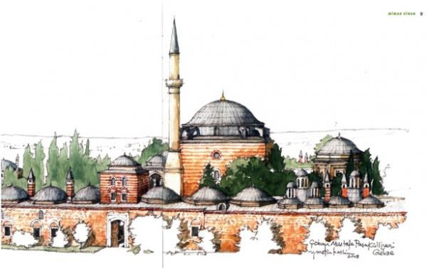

Mimar Sinan Eserleri Listesi

Camiler
- İstanbul Süleymaniye Camii,
- İstanbul Şehzadebaşı Camii,
- Haseki Camii (İstanbul),
- Mihrimah Sultan Camii (Edirnekapı),
- Mihrimah Sultan Camii (Üsküdar’da, iskelede),
- Rüstem Paşa Camii (Tahtakale’de),
- Sokullu Mehmet Paşa Camii (Kadırga Limanında),
- Sokullu Mehmet Paşa Camii (Azapkapısı’nda),
- Sokullu Mehmet Paşa Camii (Büyükçekmece),
- Odabaşı Camii (Yenikapı yakınında),
- Hamâmî Hâtun Camii (Sulumanastır’da),
- Ferruh Kethüdâ Camii (Balat Kapısı içinde),
- Kara Camii - (Sofya),
- Kazasker İvaz Efendi Camii (İstanbul'da),
- Kılıç Ali Paşa Camii (Tophane’de),
- Ahi Çelebi Camii (İzmir İskelesi yakınında),
- Ebü’l-Fazl Camii (Tophâne üstünde),
- Sinan Paşa Camii (Beşiktaş’ta),
- Eski Valide Camii (Üsküdar’da).
Medreseler
- Sultan Süleymân Medresesi (Mekke’de),
- Süleymâniye Medreseleri (İstanbul’da),
- Yavuz Sultan Selim Medresesi (Halıcılar Köşkünde),
- Sultan Selim Medresesi (Edirne’de),
- Sultan Süleymân Medresesi (Çorlu’da),
- Şehzâde Sultan Mehmet Medresesi (İstanbul’da),
- Haseki Sultan Medresesi (Avratpazarı’nda),
- Vâlide Sultan Medresesi (Üsküdar’da),
- Kahriye Medresesi (Sultan Selim yakınında),
- Mihrimah Sultan Medresesi (Üsküdar’da),
- Mihrimah Sultan Medresesi (Edirnekapı’da),
- Mehmed Paşa Medresesi (Kadırga’da),
- Mehmed Paşa Medresesi (Eyüp’te).
Türbeler
- Yahya Efendi Türbesi (Beşiktaş’ta),
- Barbaros Hayreddin Paşa Türbesi (Beşiktaş’ta),
- Arap AhmedPaşa Türbesi (Fındıklı’da),
- Sultan Süleymân Türbesi (Süleymaniye’de),
- Şehzâde Sultan MehmedTürbesi (Şehzâdebaşı’nda),
- Hüsrev Paşa Türbesi (Yenibahçe’de),
- ŞehzâdelerTürbesi (Ayasofya’da),
- Vezir-i âzam RüstemPaşa Türbesi (Şehzâde Türbesi yakınında),
- Ahmed Paşa Türbesi (Eyüp’te),
- Mehmed Paşa Türbesi (Topkapı’da).
Köprüler
- Kanuni Sultan Süleyman Köprüsü,
- Silivri Köprüsü (Sultan Süleyman Köprüsü),
- Mustafa Paşa Köprüsü (Meriç üzerinde),
- Sokullu Mehmed Paşa Köprüsü (Tekirdağ’da),
- Odabaşı Köprüsü (Halkalıpınar’da),
- Kapıağası Köprüsü (Büyükçekmece'de),
- MehmedPaşa Köprüsü (Sinanlı’da),
- Sokullu Mehmet Paşa Köprüsü (Drina Köprüsü),
- Sultan Süleyman Köprüsü (Dilovası'nda),
- Taş Köprü (Lüleburgaz),
- Uzunköprü (Edirne).